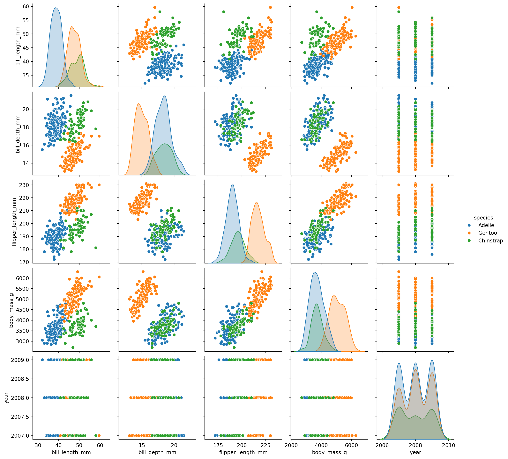
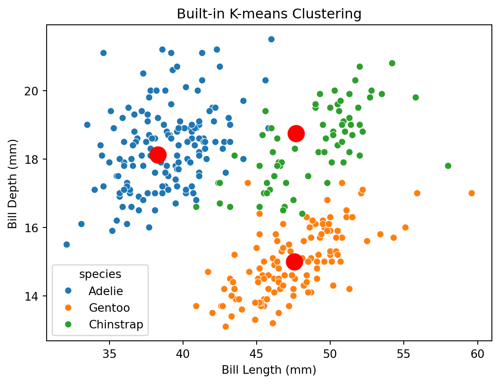
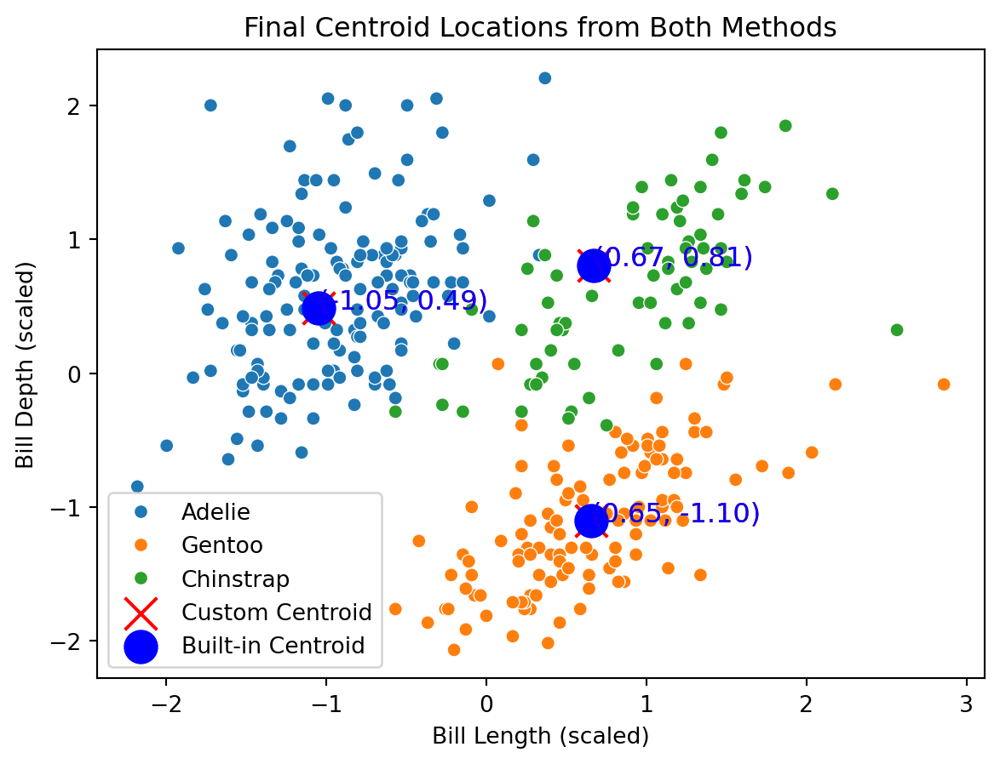
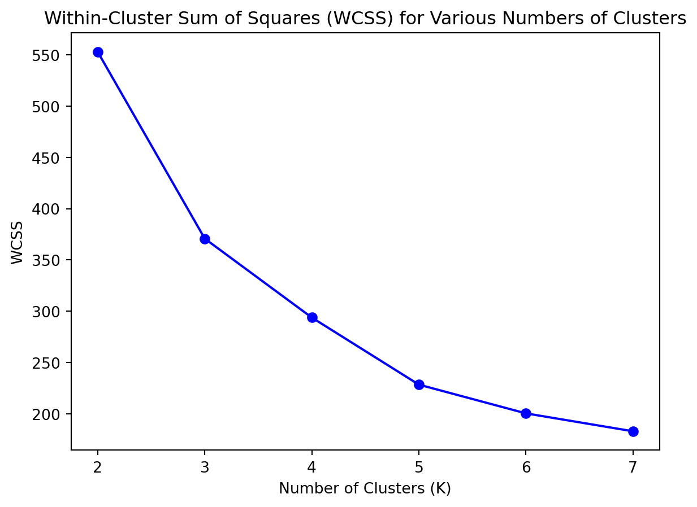
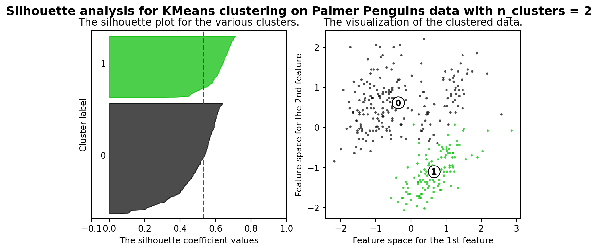
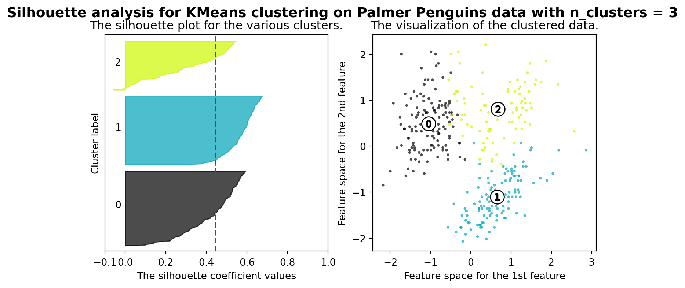
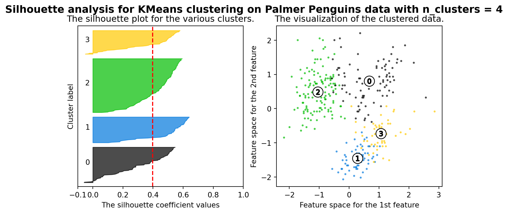
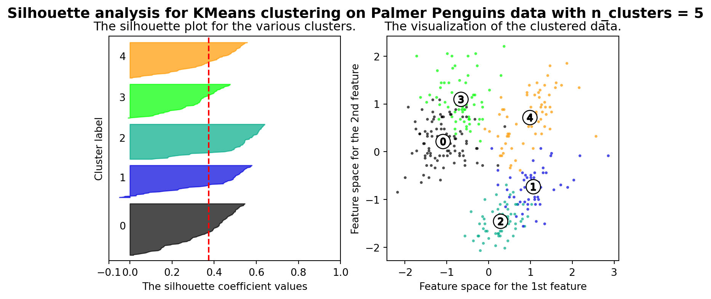
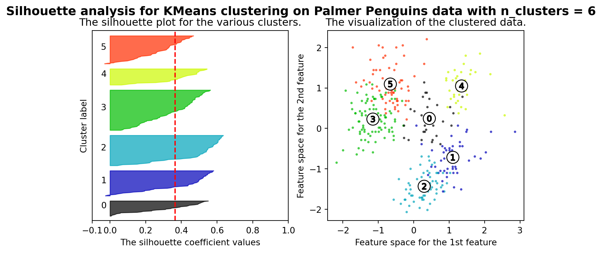
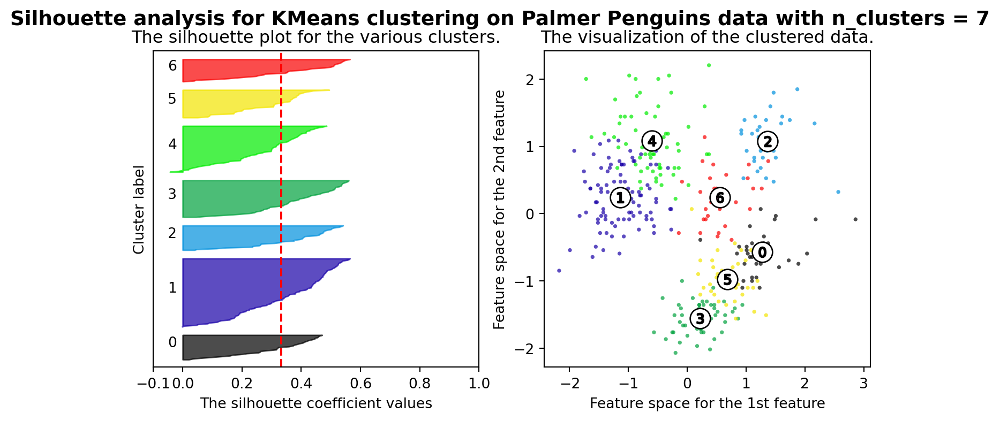

The Palmer Penguins dataset is a popular dataset for data analysis and machine learning. It contains measurements for three different species of penguins observed on three islands in the Palmer Archipelago, Antarctica. The dataset includes the following features:
Species: The species of the penguin (Adelie, Gentoo, Chinstrap)
Island: The island where the penguin was observed (Torgersen, Biscoe, Dream)
Bill Length (mm): The length of the penguin’s bill
Bill Depth (mm): The depth of the penguin’s bill
Flipper Length (mm): The length of the penguin’s flipper
Body Mass (g): The body mass of the penguin
Sex: The sex of the penguin
This dataset is often used as an alternative to the Iris dataset for demonstrating data analysis and clustering techniques, particularly because it provides a more complex and realistic example with multiple features and three distinct classes.
K-means clustering is a popular unsupervised machine learning algorithm used to partition a dataset into 𝑘 distinct, non-overlapping subsets (clusters). The algorithm aims to minimize the variance within each cluster, effectively grouping similar data points together. We are using k-means clustering to group the penguins into clusters based on their physical measurements: bill length, bill depth, flipper length, and body mass. By doing this, we aim to identify natural groupings in the data without using the species labels.
We’ll start with some exploratory data analysis to understand the structure of the dataset and then apply k-means clustering to group the penguins. In the data exploration you’ll start to see some similarities between the species based on looking at one or two features at a time.
Code
# Importsimport osimport pandas as pdimport numpy as npimport matplotlib.pyplot as pltimport seaborn as snsfrom sklearn.preprocessing import StandardScalerfrom sklearn.cluster import KMeansfrom sklearn.metrics import accuracy_scorefrom scipy.stats import modefrom sklearn.metrics import pairwise_distances_argmin_minimport matplotlib.cm as cmfrom sklearn.metrics import silhouette_samples, silhouette_scoreimport warningswarnings.filterwarnings("ignore")# Load data.csvdata = pd.read_csv('palmerpenguins.csv')print(data.shape)data.head()
Everything seems pretty standard, but it’s hard to make sense of the data when looking at it in this way. Let’s call on a useful function to plot the various relationships between the features and see if we can identify any patterns.
Code
sns.pairplot(data, hue='species')plt.show()

Very interesting! With the color differentiation between the species, we can see some recurring patterns in the data. Let’s continue by cleaning the data and getting it ready for the clustering algorithm.
There are a handful of missing values in the dataset which we’ll need to handle before applying k-means clustering. For our numerical features, we’ll use the mean value of the feature to fill in the missing values. For the rows where ‘sex’ is missing we’ll simply drop those rows.
Code
data.isnull().sum()
species 0
island 0
bill_length_mm 2
bill_depth_mm 2
flipper_length_mm 2
body_mass_g 2
sex 11
year 0
dtype: int64
Code
# Fill the missing values with the column's mean valuedata['body_mass_g'].fillna(data['body_mass_g'].mean(), inplace=True)data['flipper_length_mm'].fillna(data['flipper_length_mm'].mean(), inplace=True)data['bill_length_mm'].fillna(data['bill_length_mm'].mean(), inplace=True)data['bill_depth_mm'].fillna(data['bill_depth_mm'].mean(), inplace=True)# drop any rows with an na valuedata = data.dropna()# get the na valuesdata.isna().sum()
species 0
island 0
bill_length_mm 0
bill_depth_mm 0
flipper_length_mm 0
body_mass_g 0
sex 0
year 0
dtype: int64
It is generally a good practice to scale your input data when using k-means clustering. This is because k-means uses Euclidean distance to assign data points to clusters. If the features have different scales, the clustering results might be biased towards features with larger scales.
For example, if one feature ranges from 0 to 1 and another from 0 to 1000, the feature with the larger range will dominate the distance calculations, skewing the clustering process.
We’ll take this opportunity to trim off the columns we don’t need. ‘Sex’ is roughly evenly distributed among the species, so we’ll drop it for simplicity. ‘Year’ is not relevant, so we’ll drop that as well.
Next we’ll define the functions we need to calculate k-means by hand. This follows four steps. First, initialize the centroids by randomly selecting k data points from the dataset. Second, assign each data point to the nearest centroid. Third, update the centroids by calculating the mean of all data points assigned to each centroid. Finally, repeat steps 2 and 3 until the centroids no longer change. At that point the optimal solution has been found.
Code
def initialize_centroids(X, k, random_state=42):if random_state: np.random.seed(random_state) random_indices = np.random.permutation(X.shape[0]) centroids = X[random_indices[:k]]return centroidsdef assign_clusters(X, centroids):"""Assign each data point to the nearest centroid.""" distances = np.sqrt(((X - centroids[:, np.newaxis])**2).sum(axis=2)) cluster_assignments = np.argmin(distances, axis=0)return cluster_assignmentsdef update_centroids(X, cluster_assignments, k):"""Update the centroids as the mean of all points assigned to each cluster.""" new_centroids = np.array([X[cluster_assignments == i].mean(axis=0) for i inrange(k)])return new_centroidsdef kmeans(X, k, max_iters=100, tol=1e-4): centroids = initialize_centroids(X, k) all_centroids = [centroids]for _ inrange(max_iters): cluster_assignments = assign_clusters(X, centroids) new_centroids = update_centroids(X, cluster_assignments, k)if np.all(np.abs(new_centroids - centroids) < tol):break centroids = new_centroids all_centroids.append(centroids)return centroids, cluster_assignments, all_centroids
With that done we’ll set k = 3 to represent each species of penguin in the dataset and apply the function. If one did not have an intuition of what they were looking for, like how we are specifically trying to identify a given species, there are methods to determine the optimal number of clusters.
To aid in visualizing the process, multiple plots will be generated from the list of centroids as the algorithm moves around. In the below plots, notice the first centroids are the randomly generated trio. Quickly after that they move to the center of the clusters. The algorithm continues to iterate until the centroids converge on the best possible locations.
Of course, the k-means algorithm is already implemented in many libraries, including scikit-learn. We’ll use the scikit-learn implementation to compare the results of our manual implementation. The scikit-learn implementation is probably more efficient and optimized than our manual implementation, but the results should be very similar.
Code
# Compare with the built-in KMeans functionkmeans_builtin = KMeans(n_clusters=k, random_state=42)kmeans_builtin.fit(scaled_features)built_in_centroids = kmeans_builtin.cluster_centers_built_in_assignments = kmeans_builtin.labels_# Reassign custom cluster labels to match built-in cluster labelsclosest, _ = pairwise_distances_argmin_min(final_centroids, built_in_centroids)new_cluster_assignments = np.array([closest[label] for label in cluster_assignments])# Plotting the built-in resultssns.scatterplot(x=features['bill_length_mm'], y=features['bill_depth_mm'], hue=species)plt.scatter(scaler.inverse_transform(built_in_centroids)[:, 0], scaler.inverse_transform(built_in_centroids)[:, 1], c='red', marker='o', s=200)plt.title('Built-in K-means Clustering')plt.xlabel('Bill Length (mm)')plt.ylabel('Bill Depth (mm)')plt.show()

At a glance that appears to be roughly center when looking at the plots generated for the bill length and depth features. For a better visualization let’s plot both the manually generated centroids and those from the built-in package on top of each other. They should be very close.
Code
# Plot final centroids for both methodsdef plot_final_centroids(X, centroids_custom, centroids_builtin, species): sns.scatterplot(x=X[:, 0], y=X[:, 1], hue=species,legend='full')for i, centroid inenumerate(centroids_custom): plt.scatter(centroid[0], centroid[1], c='red', marker='x', s=200, label='Custom Centroid'if i ==0else"") plt.text(centroid[0], centroid[1], f'({centroid[0]:.2f}, {centroid[1]:.2f})', fontsize=12, color='red')for i, centroid inenumerate(centroids_builtin): plt.scatter(centroid[0], centroid[1], c='blue', marker='o', s=200, label='Built-in Centroid'if i ==0else"") plt.text(centroid[0], centroid[1], f'({centroid[0]:.2f}, {centroid[1]:.2f})', fontsize=12, color='blue') plt.title('Final Centroid Locations from Both Methods') plt.xlabel('Bill Length (scaled)') plt.ylabel('Bill Depth (scaled)') plt.legend() plt.show()# Visualize the final centroids for both methodsplot_final_centroids(scaled_features, final_centroids, built_in_centroids, species)

Excellent! Via plots we are limited to two features at a time because n-dimensional arrays become difficult to understand. Since the above suggests we’re on the right track, let’s look at a data frame of the centroids to see how they compare. This will show the values for each feature by cluster. Again we should expect the numbers from both methods to be very similar.
Code
# Create a DataFrame to show the final centroid locations for each methodcentroids_custom = scaler.inverse_transform(final_centroids)centroids_builtin = scaler.inverse_transform(built_in_centroids)df_centroids = pd.DataFrame({'Method': ['Custom']*k + ['Built-in']*k,'Cluster': np.tile(np.arange(1, k+1), 2),'Bill Length (mm)': np.concatenate([centroids_custom[:, 0], centroids_builtin[:, 0]]),'Bill Depth (mm)': np.concatenate([centroids_custom[:, 1], centroids_builtin[:, 1]]),'Flipper Length (mm)': np.concatenate([centroids_custom[:, 2], centroids_builtin[:, 2]]),'Body Mass (g)': np.concatenate([centroids_custom[:, 3], centroids_builtin[:, 3]])})# Pivot the DataFramedf_centroids_pivot = df_centroids.melt(id_vars=['Method', 'Cluster'], var_name='Feature', value_name='Value')df_centroids_pivot = df_centroids_pivot.pivot_table(index=['Cluster', 'Feature'], columns='Method', values='Value').reset_index()df_centroids_pivot
Method
Cluster
Feature
Built-in
Custom
0
1
Bill Depth (mm)
18.121705
18.121705
1
1
Bill Length (mm)
38.276744
38.276744
2
1
Body Mass (g)
3593.798450
3593.798450
3
1
Flipper Length (mm)
188.627907
188.627907
4
2
Bill Depth (mm)
14.996639
14.996639
5
2
Bill Length (mm)
47.568067
47.568067
6
2
Body Mass (g)
5092.436975
5092.436975
7
2
Flipper Length (mm)
217.235294
217.235294
8
3
Bill Depth (mm)
18.748235
18.748235
9
3
Bill Length (mm)
47.662353
47.662353
10
3
Body Mass (g)
3898.235294
3898.235294
11
3
Flipper Length (mm)
196.917647
196.917647
Looking pretty good so far. Both methods appear to have produced similar results. Since we also knew the species ahead of time we can compare the results of the algorithm to the actual labels to see how well it performed.
Code
# Function to calculate accuracy of clusteringdef calculate_accuracy(true_labels, cluster_assignments, k): labels = np.zeros_like(cluster_assignments)for i inrange(k): mask = (cluster_assignments == i) labels[mask] = mode(true_labels[mask])[0]return accuracy_score(true_labels, labels)# Convert species to numerical labels for accuracy calculationspecies_labels = species.astype('category').cat.codes# Calculate accuracy for custom k-meansaccuracy_custom = calculate_accuracy(species_labels, cluster_assignments, k)print(f'Accuracy of custom k-means: {accuracy_custom:.2f}')# Calculate accuracy for built-in k-meansaccuracy_builtin = calculate_accuracy(species_labels, built_in_assignments, k)print(f'Accuracy of built-in k-means: {accuracy_builtin:.2f}')
Accuracy of custom k-means: 0.92
Accuracy of built-in k-means: 0.92
Not bad from relatively few rows of data. Our predictive accuracy is quite high. The k-means algorithm has successfully grouped the penguins into clusters based on their physical measurements. The clusters correspond closely to the actual species of the penguins, demonstrating that the algorithm has effectively identified the natural groupings in the data.
What if we didn’t know the number of clusters to look for?
Now you may remember that we set the number of clusters to 3 because we knew there were three species of penguins in the dataset. I mentioned there were methods to determine a good number of clusters if labeling didn’t already exist. Those methods are the within-cluster-sum-of-squares and silhouette scores.
Within-Cluster-Sum-of-Squares (WCSS)
WCSS is the sum of squared distances between each point and the centroid of its assigned cluster. It measures the compactness of the clusters. It works by ploting WCSS against the number of clusters (K). Then you look for an “elbow point” where the rate of decrease sharply slows down. This point suggests the optimal number of clusters. For example, if WCSS decreases significantly from K=2 to K=3 but only marginally from K=3 to K=4, the elbow point is likely at K=3.
Code
# Calculate WCSS for various numbers of clusterswcss = []K_range =range(2, 8)for k in K_range: kmeans = KMeans(n_clusters=k, random_state=42) kmeans.fit(scaled_features)# WCSS wcss.append(kmeans.inertia_)# Determine the optimal number of clustersoptimal_k_wcss = np.diff(wcss).argmin() +2# Plot WCSSplt.plot(K_range, wcss, marker='o', color='b')plt.xlabel('Number of Clusters (K)')plt.ylabel('WCSS')plt.title('Within-Cluster Sum of Squares (WCSS) for Various Numbers of Clusters')plt.show()

You can see the elbow point subtly in the plot. The rate of decrease in WCSS slows between K=2 and K=3. After K=3, the decrease is maintained and then becomes less pronouced. Three clusters seems reasonable.
Silhouette Score
The second method looks not at the compactness of a cluster, but instead at how well separated each cluster is. The silhouette score measures how similar a point is to its own cluster compared to other clusters. It ranges from -1 to 1, with higher values indicating better-defined clusters. The silhouette score helps assess the quality of the clustering. A higher score indicates that the clusters are well-separated and well-defined. If the silhouette score is highest at K=3, it suggests that 3 clusters are the best fit for the data.
Code
# Set ranges to tryrange_n_clusters = [2, 3, 4, 5, 6, 7]for n_clusters in range_n_clusters:# Create a subplot with 1 row and 2 columns fig, (ax1, ax2) = plt.subplots(1, 2) fig.set_size_inches(9, 4)# The 1st subplot is the silhouette plot ax1.set_xlim([-0.1, 1]) ax1.set_ylim([0, len(scaled_features) + (n_clusters +1) *10])# Initialize the clusterer with n_clusters value and a random generator seed of 10 for reproducibility clusterer = KMeans(n_clusters=n_clusters, random_state=42) cluster_labels = clusterer.fit_predict(scaled_features)# The silhouette_score gives the average value for all the samples silhouette_avg = silhouette_score(scaled_features, cluster_labels)print(f"For n_clusters = {n_clusters}, The average silhouette_score is: {silhouette_avg}")# Compute the silhouette scores for each sample sample_silhouette_values = silhouette_samples(scaled_features, cluster_labels) y_lower =10for i inrange(n_clusters):# Aggregate the silhouette scores for samples belonging to cluster i, and sort them ith_cluster_silhouette_values = sample_silhouette_values[cluster_labels == i] ith_cluster_silhouette_values.sort() size_cluster_i = ith_cluster_silhouette_values.shape[0] y_upper = y_lower + size_cluster_i color = cm.nipy_spectral(float(i) / n_clusters) ax1.fill_betweenx(np.arange(y_lower, y_upper), 0, ith_cluster_silhouette_values, facecolor=color, edgecolor=color, alpha=0.7)# Label the silhouette plots with their cluster numbers at the middle ax1.text(-0.05, y_lower +0.5* size_cluster_i, str(i))# Compute the new y_lower for next plot y_lower = y_upper +10# 10 for the 0 samples ax1.set_title("The silhouette plot for the various clusters.") ax1.set_xlabel("The silhouette coefficient values") ax1.set_ylabel("Cluster label")# The vertical line for average silhouette score of all the values ax1.axvline(x=silhouette_avg, color="red", linestyle="--") ax1.set_yticks([]) # Clear the yaxis labels / ticks ax1.set_xticks([-0.1, 0, 0.2, 0.4, 0.6, 0.8, 1])# 2nd Plot showing the actual clusters formed colors = cm.nipy_spectral(cluster_labels.astype(float) / n_clusters) ax2.scatter(scaled_features[:, 0], scaled_features[:, 1], marker=".", s=30, lw=0, alpha=0.7, c=colors, edgecolor="k")# Labeling the clusters centers = clusterer.cluster_centers_# Draw white circles at cluster centers ax2.scatter(centers[:, 0], centers[:, 1], marker="o", c="white", alpha=1, s=200, edgecolor="k")for i, c inenumerate(centers): ax2.scatter(c[0], c[1], marker="$%d$"% i, alpha=1, s=50, edgecolor="k") ax2.set_title("The visualization of the clustered data.") ax2.set_xlabel("Feature space for the 1st feature") ax2.set_ylabel("Feature space for the 2nd feature") plt.suptitle(f"Silhouette analysis for KMeans clustering on Palmer Penguins data with n_clusters = {n_clusters}", fontsize=14, fontweight="bold", )plt.show()
For n_clusters = 2, The average silhouette_score is: 0.5308173701641075
For n_clusters = 3, The average silhouette_score is: 0.446192544665462
For n_clusters = 4, The average silhouette_score is: 0.39820643145014184
For n_clusters = 5, The average silhouette_score is: 0.37364957744658567
For n_clusters = 6, The average silhouette_score is: 0.3651249307697533
For n_clusters = 7, The average silhouette_score is: 0.33200036585030257






Interestingly, the silhouette score is highest at K=2 whereas the WCSS suggested K=3. This is not unexpected. Remember one measures the compactness of the clusters and the other the separation. The underlying distribution data is the cause. In many feature plots we looked at there were areas of overlap for each species. Should we ever apply this to a real-world problem, we would need to consider the context of the data and the problem we are trying to solve. Each situation is unique at the trade-off between compactness and separation will vary.
And there you have it! By harnessing the power of k-means clustering, we’ve embarked on a fascinating journey through the colorful world of the Palmer Penguins.